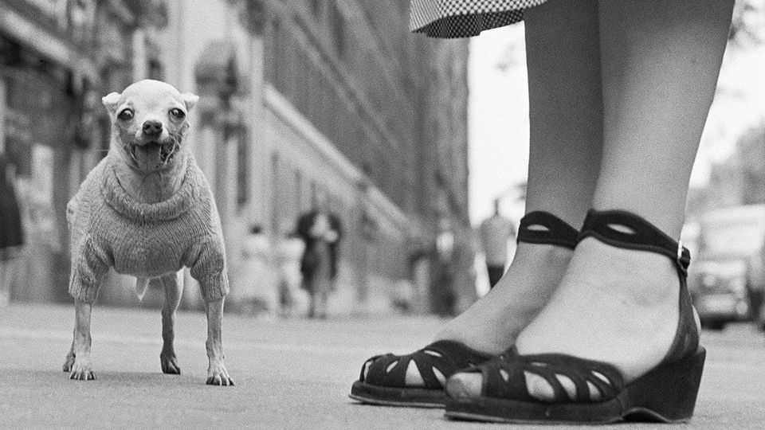

Why small dogs are so easy to love—and hate
Petite pups were the first modern pets, a new book argues

Nov 12th 2026
IT WAS NAPOLEON Bonaparte’s first defeat. On his wedding night in 1796, the plucky young general found his bride, Joséphine de Beauharnais, already had company in her bedchamber, in the form of Fortuné, a pug. Josephine insisted Fortuné stayed, even when the pup bit Napoleon on the leg. “He who dictated Europe’s rule could not put a dog out of his home,” a biographer later observed.
In a new book Stephanie Howard-Smith, a historian at the University of York, chases tales (and tails) to show the “outsize pawprint” of small dogs. For centuries, while big dogs were kept outside homes, small ones sprawled on their owners’ laps and furniture. Little dogs “became the blueprint for the modern pet”, shaping how humans care for their furry friends today.
In ancient Greece and Rome, white pomeranian-like dogs were popular. The Romans wrote epitaphs to their little pets. One owner mourned “sweet Patrice” and her affectionate “kisses”, “wagging tail” and “greedy tongue”. Some Roman beliefs were admittedly odd: Pliny the Elder, a Roman writer, reckoned putting a small dog on your stomach could cure a stomach ache (illness passed from human to dog, his theory went, and the dog would die).
The author finds small dogs in the corners of history. When Mary Queen of Scots approached the executioner’s block in 1587, she was accompanied by a “little dogg”, which hid beneath her skirts. (A witness said that it would not leave and lay soaked in her blood between her body and severed head.) King Henri III of France carried his favourite pups in a basket around his neck; one barked and snapped when he was visited by the young friar who fatally stabbed him in 1589. Man’s best friends have travelled to unusual places. General Charles Lee took his pomeranian to the front lines of the American revolutionary war. British troops stole a pekingese from the Summer Palace in Beijing during the second opium war, naming it “Looty” and giving it to Queen Victoria.
Yet small dogs were not always seen as prized companions. “Yap!” shows how they have long been condemned as “useless” distractions. Lapdogs, pampered by royals, were symbols of excess and female frivolity. The careless, canine-obsessed mother became a stock character in 18th- and 19th-century novels. Take Jane Austen’s “Mansfield Park”: the indolent Lady Bertram thinks “more of her pug than her children”.
Breeds have fallen in and out of fashion, from 18th-century “pugmania” to the poodle boom of the 1950s. Today pocket-size pooches are more popular than ever: in America, the number of small dogs has doubled since 1999. The French bulldog replaced the larger Labrador retriever as the country’s top dog in 2022.
Dogs are more doted on than before, too. Americans are expected to spend $165bn on their pets this year, forking out for treats and accessories. Today you can put your small dog in a handbag or push it around in a pram. More Gen Z say they will own a pet than have a child, according to recent research by Ipsos, a pollster. Lady Bertram would probably approve. ■